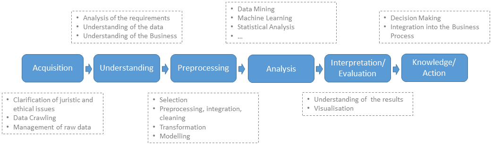
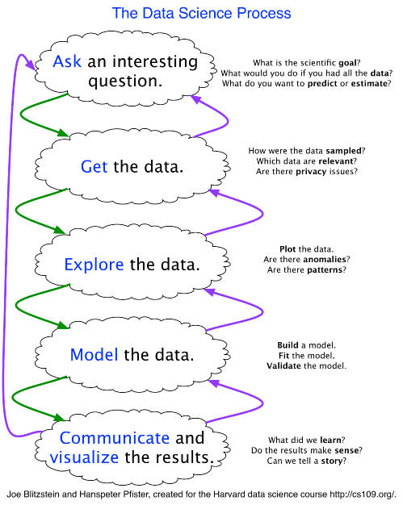

{kind=link}

CHAPTER 1 INTRODUCTION pp. 1 – 30
BRIEF HISTORY AND MOTIVATION FOR DATA SCIENCE AND MACHINE LEARNING p. 6
DEFINITIONS, DESCRIPTIONS, RELATIONSHIPS, DIAGRAMS AND TAXONOMIES p. 10
PRACTICAL DATA SCIENCE p. 24
INTRODUCTION
Basic definitions - we begin with some basic definitions all taken from the Wikipedia web site
https://en.wikipedia.org/wiki 2/10/17
Science is a systematic enterprise that builds and organizes knowledge in the form of testable explanations and predictions about the world around us.
The scientific method is visualized below (http://www.cdn.sciencebuddies.org/Files/5084/7/2013-updated_scientific-method-steps_v6_noheader.png 2/12/17).
From https://en.wikipedia.org/wiki 2/10/17:
Data is a set of values of qualitative or quantitative variables. It is measured, collected, reported, and analyzed, whereupon it can be visualized using graphs, images or other analysis tools.
Data Science is an interdisciplinary field about scientific methods, processes and systems to extract knowledge or insights from data …, similar to what is known as Knowledge Discovery in Databases or KDD.
The data science process can be visualized as follows (http://dsl.ifi.lmu.de/data-science-lab/what-is-data-science 2/12/17)

More discussion of the overall data science process is in Section 1.3
From https://en.wikipedia.org/wiki 2/10/17 and Predictive Analytics for Dummies by Anasse Bari, Mohamed Chaouchi and Tommy Jung John Wiley & Sons, 2014:
Mathematics is the body of knowledge justified by deductive reasoning about abstract structures, starting from axioms and definitions. Key topic areas include the study of quantity (numbers), structure, space and change.
Applied mathematics (a branch of mathematics) concerns itself with mathematical methods that are typically used in science, engineering, business, and industry. Thus, "applied mathematics" is a mathematical science with specialized knowledge.
A model is a mathematical representation of an object or a process. We build models to simulate real-world phenomena in hopes of understanding more clearly what's really going on.
Statistics is a branch of mathematics dealing with the collection, analysis, interpretation, presentation, and organization of data. It is concerned with the use of data in the context of uncertainty and ultimately decision making in the face of uncertainty. Two main statistical methods are used in data analysis: descriptive statistics, which summarizes data from a sample using indexes such as the mean or standard deviation, and inferential statistics, which draws conclusions from data that are subject to random variation.
One can think of mathematics as an academic subject while statistics is a part of applied mathematics.
Compare this to the definition of probability which is the measure of the likelihood that an event will occur.
Machine learning is a subfield of computer science that gives computers the ability to learn without being explicitly programmed. It has evolved from the study of pattern recognition and computational learning theory in artificial intelligence. It explores the study and construction of algorithms that can learn from and make predictions on data – such algorithms overcome strictly static program instructions by making data driven predictions or decisions through building a model from sample inputs. It is employed in a range of computing tasks where designing and programming explicit algorithms is infeasible; example applications include spam filtering, detection of network intruders or malicious insiders working towards a data breach, optical character recognition, search engines and computer vision.
From Data Science For Dummies by Lillian Pierson, John Wiley & Sons, 2015:
Data analytics (data analysis) is the process of inspecting, cleansing, transforming, and modeling data with the goal of discovering useful information, suggesting conclusions, and supporting decision-making. Data analysis has multiple facets and approaches, encompassing diverse techniques under a variety of names, in different business, science, and social science domains.
Within the field of data analytics, machine learning is a method used to devise complex models and algorithms that lend themselves to prediction; in commercial use, this is known as predictive analytics. These analytical models allow researchers, data scientists, engineers, and analysts to produce reliable, repeatable decisions and results and uncover hidden insights through learning from historical relationships and trends in the data. The primary types of analytics with respect to data science are
Descriptive analytics: This type of analytics answers the question, "What happened?" Descriptive analytics are based on historical and current data. A business analyst or a business-centric data scientist bases modern-day business intelligence on descriptive analytics.
Diagnostic analytics: You use this type of analytics to find answers to the question, "why did this particular something happen?" or "what went wrong?" Diagnostic analytics are useful for deducing and inferring the success or failure of sub-components of any data-driven initiative.
Predictive analytics: Although this type of analytics is based on historical and current data, predictive analytics go one step further than descriptive analytics. Predictive analytics involve complex model-building and analysis in order to predict a future event or trend. In a business context, these analyses would be performed by the business-centric data scientist.
Prescriptive analytics: This type of analytics aims to optimize processes, structures, and systems through informed action that's based on predictive analytics — essentially telling you what you should do based on an informed estimation of what will happen. Both business analysts and business-centric data scientists can generate prescriptive analytics, but their methods and data sources differ.
From https://www.kdnuggets.com/2018/01/build-successful-advanced-analytics-department.html
From http://searchdatamanagement.techtarget.com/definition/business-intelligence 2/12/2017
Business intelligence (BI) is a broad category of applications and technologies for gathering, storing, analyzing, and providing access to data to help enterprise users make better business decisions -
Business analytics (BA) is the practice of iterative, methodical exploration of an organization’s data with emphasis on statistical analysis. Business analytics is used by companies committed to data-driven decision making. A comparison of these two is shown below
Artificial intelligence (AI) is intelligence exhibited by machines. In computer science, the field of AI defines itself as the study of intelligent agents: any device that perceives its environment and takes actions that maximize its chance of success at some goal. Colloquially, the term "artificial intelligence" is applied when a machine mimics "cognitive" functions that humans associate with other human minds, such as "learning" and "problem solving".
The central problems (or goals) of AI research include reasoning, knowledge, planning, learning, natural language processing (communication), perception and the ability to move and manipulate objects
Data mining is the computational process of discovering patterns in large data sets involving methods at the intersection of artificial intelligence, machine learning, statistics, and database systems. It is an interdisciplinary subfield of computer science. The overall goal of the data mining process is to extract information from a data set and transform it into an understandable structure for further use.
Big data is a term for data sets that are so large or complex that traditional data processing application software is inadequate to deal with them. Challenges include capture, storage analysis, data curation, search, sharing, transfer, visualization, querying, updating and information privacy. The term "big data" often refers simply to the use of predictive analytics, user behavior analytics, or certain other advanced data analytics methods that extract value from data, and seldom to a particular size of data set.
BRIEF HISTORY AND MOTIVATION FOR DATA SCIENCE AND MACHINE LEARNING
Experts often possess more data than judgment. GEN Colin Powell
It is a capital mistake to theorize before one has data. Insensibly one begins to twist facts to suit theories, instead of theories to suit facts. Sir Arthur Conan Doyle
Data is not information, information is not knowledge, knowledge is not understanding, understanding is not wisdom. Clifford Stoll Author 1950
Errors using inadequate data are much less than those using no data at all. Charles Babbage
http://dilbert.com/strip/2010-08-24
In today’s personal, business, defense, and government environments, data is everywhere and readily available through the internet. The problem faced by decision-makers in this environment is how to transform data into sound decisions in a timely fashion. This “data-to-decision” process is at the heart of this class. This process is shown in the figure below (https://people.cs.umass.edu/~gordon/courses/CS397F/CS397FinfoPage.html 2/12/17)
Therefore from a practical (business) viewpoint - data science is the transformation of data using mathematics and statistics into valuable insights, decisions, and products. To an extent, data science is synonymous with or related to terms like business analytics, operations research, business intelligence, competitive intelligence, data analysis and modeling, and knowledge extraction (also called knowledge discovery in databases or KDD). It's just a new spin on something that people have been doing for a long time (Data Smart: Using Data Science to Transform Information into Insight by John W. Foreman, John Wiley & Sons, 2014)
We can look back to see of the key milestones in the development and interest in data science (http://www.forbes.com/sites/gilpress/2013/05/28/a-very-short-history-of-data-science/#2def1da969fd 2/12/17);
2001 William S. Cleveland publishes “Data Science: An Action Plan for Expanding the Technical Areas of the Field of Statistics.” It is a plan “to enlarge the major areas of technical work of the field of statistics. Because the plan is ambitious and implies substantial change, the altered field will be called ‘data science.’” Cleveland puts the proposed new discipline in the context of computer science and the contemporary work in data mining: “…the benefit to the data analyst has been limited, because the knowledge among computer scientists about how to think of and approach the analysis of data is limited, just as the knowledge of computing environments by statisticians is limited. A merger of knowledge bases would produce a powerful force for innovation. This suggests that statisticians should look to computing for knowledge today just as data science looked to mathematics in the past.
January 2003 Launch of Journal of Data Science: “By ‘Data Science’ we mean almost everything that has to do with data: Collecting, analyzing, modeling…… yet the most important part is its applications–all sorts of applications. This journal is devoted to applications of statistical methods at large…. The Journal of Data Science will provide a platform for all data workers to present their views and exchange ideas.”
May 2005 Thomas H. Davenport, Don Cohen, and Al Jacobson publish “Competing on Analytics,” a Babson College Working Knowledge Research Center report, describing “the emergence of a new form of competition based on the extensive use of analytics, data, and fact-based decision making… Instead of competing on traditional factors, companies are beginning to employ statistical and quantitative analysis and predictive modeling as primary elements of competition. ” The research is later published by Davenport in the Harvard Business Review (January 2006) and is expanded (with Jeanne G. Harris) into the book Competing on Analytics: The New Science of Winning (March 2007).
September 2005 The National Science Board publishes “Long-lived Digital Data Collections: Enabling Research and Education in the 21st Century.” One of the recommendations of the report reads: “The NSF, working in partnership with collection managers and the community at large, should act to develop and mature the career path for data scientists and to ensure that the research enterprise includes a sufficient number of high-quality data scientists.” The report defines data scientists as “the information and computer scientists, database and software engineers and programmers, disciplinary experts, curators and expert annotators, librarians, archivists, and others, who are crucial to the successful management of a digital data collection.”
July 2008 The JISC (formerly the Joint Information Systems Committee, UK) publishes the final report of a study it commissioned to “examine and make recommendations on the role and career development of data scientists and the associated supply of specialist data curation skills to the research community. “ The study’s final report, “The Skills, Role & Career Structure of Data Scientists & Curators: Assessment of Current Practice & Future Needs,” defines data scientists as “people who work where the research is carried out–or, in the case of data centre personnel, in close collaboration with the creators of the data–and may be involved in creative enquiry and analysis, enabling others to work with digital data, and developments in data base technology.”
January 2009 Harnessing the Power of Digital Data for Science and Society is published. This report of the Interagency Working Group on Digital Data to the Committee on Science of the National Science and Technology Council states that “The nation needs to identify and promote the emergence of new disciplines and specialists expert in addressing the complex and dynamic challenges of digital preservation, sustained access, reuse and repurposing of data. Many disciplines are seeing the emergence of a new type of data science and management expert, accomplished in the computer, information, and data sciences arenas and in another domain science. These individuals are key to the current and future success of the scientific enterprise. However, these individuals often receive little recognition for their contributions and have limited career paths.”
January 2009 Hal Varian, Google’s Chief Economist, tells the McKinsey Quarterly: “I keep saying the sexy job in the next ten years will be statisticians. People think I’m joking, but who would’ve guessed that computer engineers would’ve been the sexy job of the 1990s? The ability to take data—to be able to understand it, to process it, to extract value from it, to visualize it, to communicate it—that’s going to be a hugely important skill in the next decades… Because now we really do have essentially free and ubiquitous data. So the complimentary scarce factor is the ability to understand that data and extract value from it… I do think those skills—of being able to access, understand, and communicate the insights you get from data analysis—are going to be extremely important. Managers need to be able to access and understand the data
September 2011 D.J. Patil writes in “Building Data Science Teams”: “Starting in 2008, Jeff Hammerbacher(@hackingdata) and I sat down to share our experiences building the data and analytics groups at Facebook and LinkedIn. In many ways, that meeting was the start of data science as a distinct professional specialization… we realized that as our organizations grew, we both had to figure out what to call the people on our teams. ‘Business analyst’ seemed too limiting. ‘Data analyst’ was a contender, but we felt that title might limit what people could do. After all, many of the people on our teams had deep engineering expertise. ‘Research scientist’ was a reasonable job title used by companies like Sun, HP, Xerox, Yahoo, and IBM. However, we felt that most research scientists worked on projects that were futuristic and abstract, and the work was done in labs that were isolated from the product development teams. It might take years for lab research to affect key products, if it ever did. Instead, the focus of our teams was to work on data applications that would have an immediate and massive impact on the business. The term that seemed to fit best was data scientist: those who use both data and science to create something new”.
September 2012 Tom Davenport and D.J. Patil publish “Data Scientist: The Sexiest Job of the 21st Century” in the Harvard Business Review.
We next look at two reports generated by McKinesey & Company. This organization is a widely respected global management consulting firm that provides insights and serves leading businesses, governments, non-governmental organizations, and not-for-profits. They have been around for nearly a century.
In December 2016 they produced a report entitled “The Age of Analytics: Competing in a Data-Driven World” (http://www.mckinsey.com/business-functions/mckinsey-analytics/our-insights/the-age-of-analytics-competing-in-a-data-driven-world 2/12/17). The key points in this report are as follows (bold added):
“Data and analytics capabilities have made a leap forward in recent years. The volume of available data has grown exponentially, more sophisticated algorithms have been developed, and computational power and storage have steadily improved. The convergence of these trends is fueling rapid technology advances and business disruptions.
Most companies are capturing only a fraction of the potential value from data and analytics. Our 2011 report estimated this potential in five domains; revisiting them today shows a great deal of value still on the table. The greatest progress has occurred in location-based services and in retail, both areas with digital native competitors. In contrast, manufacturing, the public sector, and health care have captured less than 30 percent of the potential value we highlighted five years ago. Further, new opportunities have arisen since 2011, making the gap between the leaders and laggards even bigger.
The biggest barriers companies face in extracting value from data and analytics are organizational; many struggle to incorporate data-driven insights into day-to-day business processes. Another challenge is attracting and retaining the right talent—not only data scientists but business translators who combine data savvy with industry and functional expertise.
Data and analytics are changing the basis of competition. Leading companies are using their capabilities not only to improve their core operations but to launch entirely new business models. The network effects of digital platforms are creating a winner-take-most dynamic in some markets.
Data is now a critical corporate asset. It comes from the web, billions of phones, sensors, payment systems, cameras, and a huge array of other sources—and its value is tied to its ultimate use. While data itself will become increasingly commoditized, value is likely to accrue to the owners of scarce data, to players that aggregate data in unique ways, and especially to providers of valuable analytics.
Data and analytics underpin several disruptive models. Introducing new types of data sets (“orthogonal data”) can disrupt industries, and massive data integration capabilities can break through organizational and technological silos, enabling new insights and models. Hyperscale digital platforms can match buyers and sellers in real time, transforming inefficient markets. Granular data can be used to personalize products and services—and, most intriguingly, health care. New analytical techniques can fuel discovery and innovation. Above all, data and analytics can enable faster and more evidence-based decision making.
Recent advances in machine learning can be used to solve a tremendous variety of problems—and deep learning is pushing the boundaries even further. Systems enabled by machine learning can provide customer service, manage logistics, analyze medical records, or even write news stories. The value potential is everywhere, even in industries that have been slow to digitize. These technologies could generate productivity gains and an improved quality of life—along with job losses and other disruptions. Previous MGI research found that 45 percent of work activities could potentially be automated by currently demonstrated technologies; machine learning can be an enabling technology for the automation of 80 percent of those activities. Breakthroughs in natural language processing could expand that impact even further.
Data and analytics are already shaking up multiple industries, and the effects will only become more pronounced as adoption reaches critical mass. An even bigger wave of change is looming on the horizon as deep learning reaches maturity, giving machines unprecedented capabilities to think, problem-solve, and understand language. Organizations that are able to harness these capabilities effectively will be able to create significant value and differentiate themselves, while others will find themselves increasingly at a disadvantage.”
In their January 2017 report entitled, “A Future that Works: Automation, Employment, and Productivity” they make the following observations (bold added) from http://www.mckinsey.com/global-themes/digital-disruption/harnessing-automation-for-a-future-that-works 2/12/17:
“Advances in robotics, artificial intelligence, and machine learning are ushering in a new age of automation, as machines match or outperform human performance in a range of work activities, including ones requiring cognitive capabilities. In this report, part of our ongoing research into the future of work, we analyze the automation potential of the global economy, the factors that will determine the pace and extent of workplace adoption, and the economic impact associated with its potential.
Automation of activities can enable businesses to improve performance, by reducing errors and improving quality and speed, and in some cases achieving outcomes that go beyond human capabilities. Automation also contributes to productivity, as it has done historically. At a time of lackluster productivity growth, this would give a needed boost to economic growth and prosperity and help offset the impact of a declining share of the working-age population in many countries. Based on our scenario modeling, we estimate automation could raise productivity growth globally by 0.8 to 1.4 percent annually.
About half the activities people are paid almost $15 trillion in wages to do in the global economy have the potential to be automated by adapting currently demonstrated technology, according to our analysis of more than 2,000 work activities across 800 occupations. While less than 5 percent of all occupations can be automated entirely using demonstrated technologies, about 60 percent of all occupations have at least 30 percent of constituent activities that could be automated. More occupations will change than will be automated away.”
Finally, in an article in McKinsey Quarterly in October 2016 (http://www.mckinsey.com/business-functions/digital-mckinsey/our-insights/making-data-analytics-work-for-you-instead-of-the-other-way-around 2/12/17), they draw the following conclusions (bold added):
The data-analytics revolution now under way has the potential to transform how companies organize, operate, manage talent, and create value. That’s starting to happen in a few companies—typically ones that are reaping major rewards from their data—but it’s far from the norm. There’s a simple reason: CEOs and other top executives, the only people who can drive the broader business changes needed to fully exploit advanced analytics, tend to avoid getting dragged into the esoteric “weeds.” On one level, this is understandable. The complexity of the methodologies, the increasing importance of machine learning, and the sheer scale of the data sets make it tempting for senior leaders to “leave it to the experts.”
But that’s also a mistake. Advanced data analytics is a quintessential business matter. That means the CEO and other top executives must be able to clearly articulate its purpose and then translate it into action—not just in an analytics department, but throughout the organization where the insights will be used.
DEFINITIONS, DESCRIPTIONS, RELATIONSHIPS, DIAGRAMS AND TAXONOMIES
We now look at more detailed definitions and descriptions of some of the key terminology relevant to this class. The following are taken from the book by Lillian Pierson - Data Science For Dummies by Lillian Pierson, John Wiley & Sons, 2015.
Data science is the practice of using computational methods to derive valuable and actionable insights from raw datasets. It is the scientific domain that's dedicated to knowledge discovery via data analysis.
Data scientists use mathematical techniques and algorithmic approaches to derive solutions to complex business and scientific problems. Data science practitioners use its methods to derive insights that are otherwise unattainable. Both in business and in science, data science methods can provide more robust decision making capabilities. In business, the purpose of data science is to empower businesses and organizations with the data information that they need to optimize organizational processes for maximum efficiency and revenue generation. In science, data science methods are used to derive results and develop protocols for achieving the specific scientific goal at hand.
Data science is a vast and multi-disciplinary field. To truly call yourself a data scientist, you need to have expertise in math and statistics, computer programming, and your own domain-specific subject matter. Without subject-matter expertise, you might as well call yourself a mathematician or a statistician. Similarly, a software programmer without subject-matter expertise and analytical know-how might better be considered a software engineer or developer, but not a data scientist.
We now look at a figure (using Venn diagram format) that can help shed light on what we mean by data science. The following figures were taken from http://drewconway.com/zia/2013/3/26/the-data-science-venn-diagram 2/12/17
Another Venn diagram view is shown below, and in this one Data Science includes all of the items in the diagram and the rare individual who has the right amount of each is at the center (unicorn - a mythical beast with magical powers who's rumored to exist but is never actually seen in the wild) from Copyright - Steven Geringer Raleigh, Inc. as shown on http://www.kdnuggets.com/2016/10/battle-data-science-venn-diagrams.html 2/12/17.
A couple more of note from https://advanceddataanalytics.net/images/ 2/12/17:
The last figure above introduces a new term: Data Engineer (Data Science For Dummies by Lillian Pierson, John Wiley & Sons, 2015).
Data Engineers - if engineering is the practice of using science and technology to design and build systems that solve problems, then you can think of data engineering as the engineering domain that's dedicated to overcoming data-processing bottlenecks and data-handling problems for applications that utilize big data. It involves designing, building, and implementing software solutions to problems in the data world.
In both data science and data engineering, it's common to work with the following three data varieties:
Structured data: Data that's stored, processed, and manipulated in a traditional relational database management system.
Unstructured data: Data that's commonly generated from human activities and that doesn't fit into a structured database format.
Semi-structured data: Data that doesn't fit into a structured database system, but is nonetheless structured by tags that are useful for creating a form of order and hierarchy in the data.
Next we go back to statistics since it plays a central role in statistics and machine learning, and look at what its basic functions are (from http://www.emathzone.com/tutorials/basic-statistics/functions-or-uses-of-statistics.html 2/12/2017)
Statistics helps in providing a better understanding and exact description of a phenomenon of nature.
Statistics helps in proper and efficient planning of a statistical inquiry in any field of study.
Statistics helps in collecting an appropriate quantitative data.
Statistics helps in presenting complex data in a suitable tabular, diagrammatic and graphic form for an easy and clear comprehension of the data.
Statistics helps in understanding the nature and pattern of variability of a phenomenon through quantitative observations.
Statistics helps in drawing valid inference, along with a measure of their reliability about the population parameters from the sample data.
A set of infographics below from DataCamp help show the key roles and who does what in the data science industry (https://www.datacamp.com/community/tutorials/data-science-industry-infographic#gs.TgsSXYI 2/19/17)

The diagram below gives one an idea of the difference between classical statistical analysis vs. the modern data science analytical process (A Data Science Course for Undergraduates: Thinking With Data by Ben Baumer, The American Statistician Vol. 69 , Issue. 4, published online 29 Dec 2015 http://www.tandfonline.com/doi/abs/10.1080/00031305.2015.1081105?journalCode=utas20 on 2/3/17). This class will focus on many of the items circled in orange.
Next we look at some additional diagrams of the data science process (http://www.kdnuggets.com/2016/03/data-science-process-rediscovered.html 2/12/17).

The next figure below entitled the Data Science Lifecycle is a more detailed look at the general data science process (https://blogs.technet.microsoft.com/machinelearning/2016/10/11/introducing-the-team-data-science-process-from-microsoft/ )
A more business-focused look at data science is shown below (http://www.kdnuggets.com/2016/10/mind-data-scientist-part-1.html 2/19/17)

Now we start looking at a more detailed view of the variety of disciplines within Data Science (http://www.oralytics.com/2012/06/data-science-is-multidisciplinary.html 2/12/17);
In the above diagram, we see where machine learning and AI fit.
An even more elaborate diagrams is shown below (https://www.linkedin.com/pulse/20140903194459-57656293-the-data-science-skills-network 2/12/17)
And another which highlights the steps on the road to data science (http://nirvacana.com/thoughts/becoming-a-data-scientist/ 2/12/17)
The diagram shown below shows the 4 levels of software algorithms used in decision making (https://twitter.com/MikeQuindazzi/status/802995935462703104 2/12/17). In this class we will touch on some of classical tools used in statistical reasoning, but the focus will be on machine learning algorithms.
To complete our introductory discussion of data science analytical techniques which lie at the heart of machine learning we note the most common data science modeling tasks that you will be performing (Practical Data Science with R by Nina Zumel and John Mount, Manning Publications, 2014)
Classification - Deciding if something belongs to one category or another
Scoring - Predicting or estimating a numeric value, such as a price or probability
Ranking - Learning to order items by preferences
Clustering - Grouping items into most-similar groups
Finding relations - Finding correlations or potential causes of effects seen in the data
Characterization - Very general plotting and report generation from data
PRACTICAL DATA SCIENCE
The last part of this class introduction points you to some practical procedures to follow when you begin using data science / machine learning outside of a classroom environment. Much of this practical information comes from the business world as highlighted in the Harvard Business Review and Forbes magazine.
The first article we consider is from Forbes 29 Nov 2016 and is entitled “Everything You Should Know About Data Science: The Century’s Hottest Career” (some bold and all highlights added) from http://www.forbes.com/sites/laurencebradford/2016/11/29/striking-oil-with-data-science-the-centurys-hottest-career/print/ 2/19/17.
“Gautam Tambay, cofounder and CEO of Springboard, believes that “Data is the new oil.” Demand for data scientists has gone nowhere but up in recent years — and despite what you may think, you don’t need a Ph.D. to be successful in the field. In this article, Tambay walks us through the future (and present) of data science.
Why Is Data Science So Hot?
So why is data the new oil? “The world is producing more data every year, now, than it did in the entire 20th century,” Tambay says. “Success over the next decade is going to be largely dependent on how companies are going to be able to turn that data into insights and actually take action on it. I think data itself is a commodity. Everybody has it and it’s become cheap to store it and people are sitting on volumes of data, but what do you do with it?”
That’s where data science comes in. In an age where the bombardment of information never seems to cease, most of us just let it all flow over us, remembering a few highlights here and there but quickly moving on to the next thing. Data scientists are the ones who can slice through all the fluff to extract the meaning of all that information: how it’s connected and what its implications are. For companies looking to make strategic decisions, this skill is invaluable.
What Does It Take To Be A Data Scientist?
Most early data scientists came straight from higher education: graduate programs and PhDs. But Tambay attributes this correlation not to the idea that you need higher education to be a data scientist, but rather that the same people who are drawn to academia may be drawn to data science as well, due to their shared focus on “hypothesis-driven experimentation and thinking about the experiments in a very structured way and understanding the statistics.”
What this boils down to is that a career in data science doesn’t necessarily have to follow a long academic career; rather, it can replace it. For those who have an academic mindset but don’t want to go into academia and become professors, data science is a lucrative alternative.
What does it take? A logical mind. A tenacious attitude. A love of experimentation. A talent for breaking down problems. But the grad degree is optional.
One of Tambay’s favorite real-life examples of degree-free success is Niraj Sheth, who studied liberal arts in college, then worked in journalism, then in marketing, and is now a data scientist at Reddit after teaching himself to code and going through the Springboard program.
Far from considering his background a detriment, Sheth views it as an asset. “Data science as a field is a hybrid of several other things,” he says. “Fundamentally, it is as much about people — the users you’re building for and the coworkers you’re building it with — as it is about math and engineering. Having a hybrid background myself has definitely helped me understand which parts of data science to leverage at different times.”
How to Think Like a Data Scientist
If you’re wondering whether there’s a concrete process to follow, Tambay breaks it down for us into five steps.
“First of all, you want to learn to break down problems into its constituents. Every time you think about why something’s happening, create a hypothesis. This can apply day to day. When you’re doing anything with your friends. When you see something happening, [ask] ‘why did that happen?’
“[Second], think about, ‘what data would I need to prove or disprove this hypothesis?’ Think about why this would happen, think about a hypothesis, think about what data you would need to prove or disprove the hypothesis, then go find the data and see if the data confirms your hypothesis.
“[Third], think about how to bridge the gap between this simple hypothesis-driven thinking to actually running large experiments. That’s where you need to learn the statistics, that’s where you need to think about how to clean and wrangle data, because often data is messy.
“[Fourth], you think about how to organize the data into analyzable form, and that’s when you need the tools, whether it’s Python programming or a language like R or some people will just even use SQL and Excel for smaller problems. But that’s when you need the tools to actually analyze and conduct your analysis.
“Finally, you need tools to visualize and present your insights — data storytelling.”
If you’re on the fence about exploring data science, the first and second steps of this process are things that anyone can do, says Tambay, and they’re a good way to gauge whether you’ll enjoy working in the industry. It all starts, he says, with “asking the right questions.”
The second article is from the Harvard Business Review 25 Nov 2016 and is entitled “Better Questions to Ask You Data Scientists” (some bold added and all highlights added) from https://hbr.org/2016/11/better-questions-to-ask-your-data-scientists 2/19/17.
“The intersection of big data and business is growing daily. Although enterprises have been studying analytics for decades, data science is a relatively new capability. And interacting in a new data-driven culture can be difficult, particularly for those who aren’t data experts.
One particular challenge that many of these individuals face is how to request new data or analytics from data scientists. They don’t know the right questions to ask, the correct terms to use, or the range of factors to consider to get the information they need. In the end, analysts are left uncertain about how to proceed, and managers are frustrated when the information they get isn’t what they intended.
… (below) are some important factors to think about when communicating with data scientists, particularly as you begin a data search.
What data do we need? As you define the right question and objectives for analysis, you and your data scientist should assess the availability of the data. Ask if someone has already collected the relevant data and performed analysis. The ever-growing breadth of public data often provides easily accessible answers to common questions. Cerner, a supplier of health care IT solutions, uses data sets from the U.S. Department of Health and Human Services to supplement their own data. Medicare uses information from the Centers for Medicare and Medicaid Services to select policies. Consider whether public data could be used toward your problem as well. You can also work with other analysts in the organization to determine if the data has previously been analyzed for similar reasons by others internally.
Then, assess whether the available data is sufficient. Data may not contain all the relevant information needed to answer your questions. It may also be influenced by latent factors that can be difficult to recognize. Consider the vintage effect in private lending data: Even seemingly identical loans typically perform very differently based on the time of issuance, despite the fact they may have had identical data at that time. The effect comes from fluctuations in the underlying underwriting standards at issuance, information that is not typically represented in loan data.
You should also inquire if the data is unbiased, since sample size alone is not sufficient to guarantee its validity. Finally, ask if the data scientist has enough data to answer the question. By identifying what information is needed, you can help data scientists plan better analyses going forward.
How do we obtain the data? If more information is needed, data scientists must decide between using data compiled by the company through the normal course of business, such as through observational studies, and collecting new data through experiments. As part of your conversation with analysts, ask about the costs and benefits of these options. Observational studies may be easier and less expensive to arrange since they do not require direct interaction with subjects, for example, but they are typically far less reliable than experiments because they are only able to establish correlation, not causation. Experiments allow substantially more control and provide more reliable information about causality, but they are often expensive and difficult to perform. Even seemingly harmless experiments may carry ethical or social implications with real financial consequences. Facebook, for example, faced public fury over its manipulation of its own newsfeed to test how emotions spread on social media. Though the experiments were completely legal, many users resented being unwitting participants in Facebook’s experiments. Managers must think beyond the data and consider the greater brand repercussions of data collection and work with data scientists to understand these consequences.
Before investing resources in new analysis, validate that the company can use the insights derived from it in a productive and meaningful way. This may entail integration with existing technology projects, providing new data to automated systems, and establishing new processes.
Is the data clean and easy to analyze? In general, data comes in two forms: structured and unstructured. Structured data is structured, as its name implies, and easy to add to a database. Most analysts find it easier and faster to manipulate. Unstructured data is often free form and cannot be as easily stored in the types of relational databases most commonly used in enterprises. While unstructured data is estimated to make up 95% of the world’s data, according to a report by professors Amir Gandomi and Murtaza Haider of Ryerson University, for many large companies, storing and manipulating unstructured data may require a significant investment of resources to extract necessary information. Working with your data scientists, evaluate the additional costs of using unstructured data when defining your initial objectives.
Even if the data is structured it still may need to be cleaned or checked for incompleteness and inaccuracies. When possible, encourage analysts to use clean data first. Otherwise, they will have to waste valuable time and resources identifying and correcting inaccurate records. A 2014 survey conducted by Ascend2, a marketing research company, found that nearly 54% of respondents complained that a “lack of data quality/completeness” was their most prominent impediment. By searching for clean data, you can avoid significant problems and loss of time.
Is the model too complicated? Statistical techniques and open-source tools to analyze data abound, but simplicity is often the best choice. More complex and flexible tools expose themselves to overfitting and can take more time to develop. Work with your data scientists to identify the simpler techniques and tools and move to more complex models only if the simpler ones prove insufficient. It is important to observe the KISS rule: Keep It Simple, Stupid!”
The third article is also from the Harvard Business Review 07 Dec 2016 is entitled “Why You’re Not Getting Value from Your Data Science” (some bold added and all highlights added) from https://hbr.org/2016/12/why-youre-not-getting-value-from-your-data-science 2/19/17.
“Businesses today are constantly generating enormous amounts of data, but that doesn’t always translate to actionable information. Over the past several years, my research group at MIT and I have sought answers to a fundamental question: What would it take for businesses to realize the full potential of their data repositories with machine learning?
As we worked to design machine learning–based solutions with a variety of industry partners, we were surprised to find that the existing answers to this question often didn’t apply. Why?
First, whenever we spoke with machine learning experts (data scientists focused on training and testing predictive models) about the most difficult part of their job, they said again and again, “the data is a mess.” Initially, taking that statement literally, we imagined it referred to well-known issues with data — missing values or a lack of coherence across databases. But as we dug deeper, we realized the problem was slightly different. In its rawest form, even clean data is too overwhelming and complex to be understood at first glance, even by experts. It has too many tables and fields and is often collected at a very high granularity (for example, online clickstreams generate new data with every click, and sensor data is collected at 125 observations per second). Machine learning experts are used to working with data that’s already been aggregated into useful variables, such as the number of website visits by a user, rather than a table of every action the user has ever taken on the site.
At the same time, we often heard business experts complain that “we have a lot of data and we are not doing anything with it.” Further investigation revealed that this was not strictly correct either. Instead, this frustration stems from two problems. For one thing, due to the time it takes to understand, formulate, and process data for a machine learning problem, machine learning experts often instead focus on the later parts of the pipeline—trying different models, or tuning the hyper-parameters of the model once a problem is formulated, rather than formulating newer predictive questions for different business problems. Therefore, while business experts are coming up with problems, machine learning experts cannot always keep up.
For another, machine learning experts often didn’t build their work around the final objective—deriving business value. In most cases, predictive models are meant to improve efficiency, increase revenue, or reduce costs. But the folks actually working on the models rarely ask “what value does this predictive model provide, and how can we measure it?” Asking this question about value proposition often leads to a change in the original problem formulation, and asking such questions is often more useful than tweaking later stages of the process. At a recent panel filled with machine learning enthusiasts, I polled the audience of about 150 people, asking “How many of you have built a machine learning model?” Roughly one-third raised their hands. Next, I asked, “How many of you have deployed and/or used this model to generate value, and evaluated it?” No one had their hand up.
In other words, the machine learning experts wanted to spend their time building models, not processing massive datasets or translating business problems into prediction problems. Likewise, the current technological landscape, both commercial and academic, focuses on enabling more sophisticated models (via Latent variable models), scaling model learning algorithms (via distributed compute), or fine-tuning (via Bayesian hyper optimization)—essentially all later stages of the data science pipeline. However, in our experience, we found this focus to be misplaced.
If companies want to get value from their data, they need to focus on accelerating human understanding of data, scaling the number of modeling questions they can ask of that data in a short amount of time, and assessing their implications. In our work with companies, we ultimately decided that creating true impact via machine learning will come from a focus on four principles:
Stick with simple models: We decided that simple models, like logistic regression or those based on random forests or decision trees, are sufficient for the problems at hand. The focus should instead be on reducing the time between the data acquisition and the development of the first simple predictive model.
Explore more problems: Data scientists need the ability to rapidly define and explore multiple prediction problems, quickly and easily. Instead of exploring one business problem with an incredibly sophisticated machine learning model, companies should be exploring dozens, building a simple predictive model for each one and assessing their value proposition.
Learn from a sample of data - not all the data: Instead of focusing on how to apply distributed computing to allow any individual processing module to handle big data, invest in techniques that will enable the derivations of similar conclusions from a data subsample. By circumventing the use of massive computing resources, they will enable the exploration of more hypotheses.
Focus on automation: To achieve both reduced time to first model and increased rate of exploration, companies must automate processes that are normally done manually. Over and over across different data problems, we found ourselves applying similar data processing techniques, whether it was to transform the data into useful aggregates, or to prepare data for predictive modeling—it’s time to streamline these, and to develop algorithms and build software systems that do them automatically.
This acute understanding of how data scientists interact with data and where the bottlenecks are led us to launch “The Human-Data Interaction Project” at MIT, focusing on the goals listed above. Our target is rapid exploration of predictive models, and to actually put them to use by solving real problems in real organizations. These models will be simple, and automation will enable even naive users to develop hundreds if not thousands of predictive models within hours—something that, today, takes experts entire months.”
The fourth article is also from the Harvard Business Review 26 Jan 2017 and is entitled “The Best Data Scientists Get Out and Talk to People” (some bold added and all highlights added) from https://hbr.org/2017/01/the-best-data-scientists-get-out-and-talk-to-people 2/19/17.
“You can be a good data scientist by sitting at your computer. After all, the job description involves poring through huge quantities of often disparate data to find insights that may prove helpful in every aspect of a business, including marketing, logistics, and human resources. It also includes cleaning data, dealing with gaps, and sifting through incomplete poor definitions.
But great data scientists know they must do more. They recognize that there are nuances and quality issues in the data that they can’t understand while sitting at their desks. They recognize that the world is filled with “soft data,” relevant sights, sounds, smells, tastes, and textures that are yet to be digitized — and hence are unavailable to those working at their computers. (Think of things like the electricity in the air at a political rally and the fear in the eyes of an executive faced with an unexpected threat.) They know they must understand the larger context, the real problems and opportunities, how decision makers decide, and how their predictions will be used.
Great data scientists know the only way to acquire this smorgasbord of information is to go get it. So they spend time on the road with truckers, probe decision makers, wander the factory floor, pretend to be a customer, ask experts in other disciplines for help, and so forth. They delve deeply into processes of data creation and the complexities of measurement equipment. They ask old hands how their recommendations will be used, what the likely results are, and what can go wrong.
Consider an example from the oil business. Where the oil is thick, it is hard to pump out of the ground. To make this process easier, companies heat the oil first with steam. Steam is expensive and must be used according to strict ecological guidelines, so putting the right amount in is critical. A good data scientist can take many factors into account — the underlying geology, the current temperature of the oil, the well’s production history — to optimize the amount of steam.
But a great data scientist would also spend some time in the oil field. There, they would notice that the probe used to estimate current temperature is sometimes lowered into the well clean, while at other times it is covered with mud. As it happens, mud is a great insulator, leading to a “too-low” temperature and, in turn, too much steam. Having verified this through a simple experiment, the great data scientist will tackle the root of the issue, namely the lack of a work instruction advising the technician to insert a clean probe.
Great data scientists are deeply curious about the data and everything surrounding it. In this case, optimizing the amount of steam is important, but rooting out the data quality issue (the mud-covered probe) is more fundamental and saves millions of dollars.
Not all data scientists spend enough time understanding the deeper reality they study. Some concentrate too much on the numbers. For example, in predicting the most recent election, the place to be was in the mind of the potential voter. You can’t go there directly, so many individuals and publications, from the New York Times to the Princeton Election Commission, used polls to predict who would win. But most were way off.
Many people have dissected how this may have happened, but I’d argue that it comes down to what a great data scientist does that a lesser one may not. Great data scientists know they have to understand the strengths and weaknesses in the data in great detail. Polling is fraught, as Nate Silver cautioned, and great data scientists worry more about nonsampling error than about models for aggregating polls. They study the accuracy of past polls, ask themselves what would happen if people lie to pollsters, and ponder biases such as whether people who say they are likely to vote will actually do so. A few in the media commented on how they felt much more energy at Trump rallies than at Clinton rallies, even suggesting that this could translate to greater turnout for his supporters. Great data scientists conduct such analyses to develop a wider perspective.
What’s more, great data scientists cast a wide net in looking for relevant data. Might Americans distrust political dynasty, lowering the chances of a candidate seeking election after a two-term president from her party? Might economic performance help — or hurt — the incumbent party? Might the winner of the Super Bowl correlate with the winner of the election?
Of course, a healthy dose of skepticism should go with each of these analyses (it’s hard to see any relationship between a football game and a presidential election), but for great data scientists, this business of exploring the world from as many angles as possible, being deeply curious about the data, whether digitized or not, and asking how the pieces fit together never stops. If you’re not actively doing these things, take steps to fold this into your daily work.
First, see how the data is actually collected. Treat Osborn’s Law — “variables won’t; constants aren’t” — as your watchword. Measurement instruments get clogged with sand, pollsters don’t follow their scripts, and survey developers inadvertently design their instruments in ways that bias results. You can’t assume that your data is unbiased and correct. Take a hard look, in person.
Second, get to know the full context in which you work. Look at the business you serve, the critical issues you face, and so on. Read, study, and go to conferences. Build and utilize an extensive network with special focus on people outside the field of data science. Seek out veterans and managers who will make time to explain the business. Get them to introduce you to others, and ask a couple of them to serve as informal mentors. You may have to nudge them from time to time, but you’ll very likely find plenty of people eager to help.
Third, integrate these efforts into your day-in, day-out work. Engage in important analyses with those who can help you frame and flesh out the real problem and suggest data sets and theories that you may not have considered. Connect with people who have different perspectives. Test your initial results on others and get them to help you work through everything that could go wrong. Make sure you report — in ways decision makers can understand — assumptions, uncertainties in your results, and concerns.
Great data scientists know that the goal is to solve real-world problems. They use data to do so, but they don’t stop there. Make it your mission to learn all you can about your data, starting from where it was first created. Embrace the broader reality, with a special emphasis on all the information that is yet to be stored in technology.”
And finally one more motivational graphic showing the fastest growing jobs in technology from https://qz.com/1006812/programmers-get-so-many-job-offers-search-site-indeed-created-a-special-spam-filter-to-help-them-deal-with-it/ 8/13/17.
END CHAPTER 1